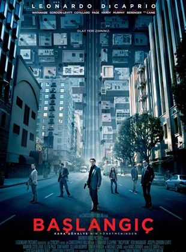
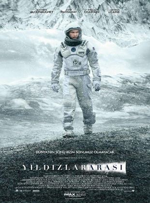
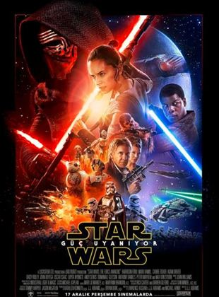
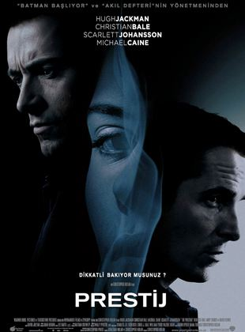
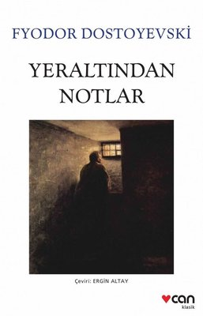
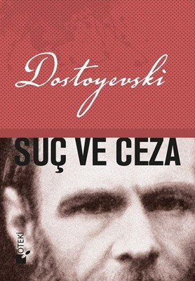
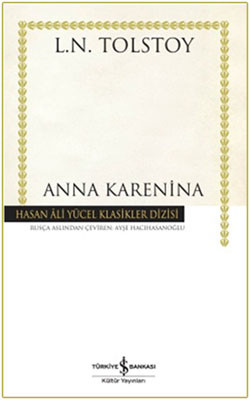
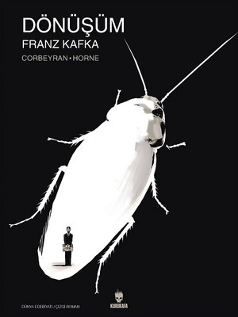
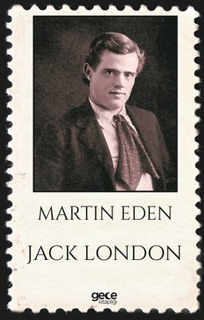

Merhaba, ben Muammer. Bilim kurgu filmlerini ve kitap okumayı seviyorum.
En iyi bilim kurgu filmleri listem
Inception

Özet
Leonardo DiCaprio bu yapımda, çok yetenekli bir hırsız olan "Dom Cobb " ile karşımızda. Uzmanlık alanı, zihnin en karanlık ve savunmasız olduğu rüya görme anında, bilinçaltının derinliklerindeki değerli sırları çekip çıkarmak ve onları çalmaktır. Cobb'un bu nadir insanlarda görülebilecek yeteneği, bu ender rastgelinebilecek mahareti, onu kurumsal casusluğun tehlikeli yeni dünyasında aranan bir oyuncu yapmıştır. Aynı zamanda bu durum onu uluslararası bir kaçak yapmış ve sevdiği herşeye malolmuştur. Cobb'a içinde bulunduğu durumdan kurtulmasını sağlayacak bir fırsat sunulur. Ona hayatını geri verebilecek son bir iş; tabi eğer imkansız 'başlangıç'ı tamamlayabilirse. Mükemmel soygun yerine, Cobb ve takımındaki profesyoneller bu sefer tam tersini yapmak zorundadır; görevleri bir fikri çalmak değil onu yerleştirmektir. Eğer başarırlarsa, mükemmel suç bu olacaktır.
Interstellar

Özet
Yıldızlararası'nda, teknik bilgisi ve becerisi yüksek olan Cooper, geniş mısır tarlalarında çiftçilik yaparak geçinmektedir; amacı iki çocuğuna güvenli bir hayat sunmaktır. Onlarla yaşayan Büyükbaba Donald çocuklara göz kulak olurken, henüz 10 yaşındaki kızı Murph şaşırtıcı bir zekaya sahiptir. Geçmişte bıraktığı biliminsanı kariyerini özleyen Cooper'un karşısına bir gün beklenmedik bir teklif çıkar ve ailesinin, dahası insanlığın güvenliği için zorlu bir karar alması gerekir...
Christopher Nolan'ın, Jonathan Nolan ile kaleme aldığı ve yönetmenliğini sırtladığı filmin yıldız oyunculardan oluşan oyuncu kadrosunda Matthew McConaughey, Anne Hathaway, Jessica Chastain, Matt Damon, Bill Irwin, John Lithgow ve Michael Caine gibi isimler yer alıyor. Bilimkurgunun yanı sıra dramatik öğeler de içeren filmin senaryosu Fizikçi Kip S. Thorne'nun evrendeki 'Solucan Delikleri' teorisinden ilham alıyor.
Matrix

Özet
Bir yaşanan gerçek vardır, bir de yaşananın ötesinde olan gerçeklik... Biri rüya, diğeri ise Matrix! Neo,son derece tehlikeli bir adam olan Morpheus’un gerçeği bildiğine inanmaktadır. Bir gece Neo, kendisini başka bir dünyaya götürebilecek güzel yabancı Trinity ile tanışır. Bu kızın götüreceği dünyada, Neo Morpheus’u bulacak ve Matrix hakkında bir şeyler öğrenecektir. Neo, Tam olarak kavrayamadığı şeylerin yaşamını kontrol ettiğini biliyor.. Nedir bu Matrix?
Star Wars Series

Özet
Yıldız Savaşları, George Lucas tarafından yaratılmış, öncelikle filmleriyle tanınmış, sonraki yıllarda çizgiroman, bilgisayar ve konsol oyunları, televizyon yapımları vb. dallarda ününü arttırmış kurgusal bir evren ve markadır. Serinin ilk filmi, 25 Mayıs 1977'de 20th Century Fox tarafından Star Wars (Yıldız Savaşları) ismiyle yayınlanmış ve dünya çapında bir popüler kültür fenomeni olmuştur. Üçer yıl arayla iki devam filmi yayınlanmıştır. Orijinal üçlemenin son filminin yayınlanmasının 16 yıl ardından, "öncül" üçlemenin ilk filmi yayımlanmış ve yine üçer yıl arayla diğer iki film de yayımlanmıştır. 2015 yılında "ardıl" üçleme başlamış, 2 yıl arayla devam filmleri yayımlanmıştır.
Yıldız Savaşları yayınlarındaki olaylar, kurgusal bir galakside gerçekleşmektedir. Pek çok uzaylı ırkı tasvir edildiği gibi, genellikle sahiplerinin emirlerini yerine getiren robotlara da yer verilmiştir. Uzay yolculuğuna oldukça sık rastlanır, evrendeki pek çok gezegen (daha sonra Galaktik İmparatorluk olarak değişmek üzere) Galaktik Cumhuriyetin bir üyesidir.
Yıldız Savaşları'nın göze çarpan bir karakteristiği "Güç" olarak adlandırılan, yetenekli bireyler tarafından kullanılabilen, tüm evreni kapsadığına inanılan enerjidir. Yayınlanan ilk filmde "tüm canlı varlıkları sarmalayan, delip geçen, birbirine bağlayan enerji" olarak açıklanmıştır. "Güç", kullanıcılarına, telekinezi, kehanet, öngörü, zihin kontrolü gibi çeşitli doğaüstü yetenekler bahşeder ve refleksler ve hız gibi pek çok fiziksel özelliğin gelişmesini sağlar. Bu yetenekler karakterler arasında farklılık gösterebilir. Güç iyilik için kullanılabileceği gibi, nefret, saldırganlık ve kötülük duygularını besleyen karanlık tarafının takipçileri tarafından farklı amaçlar için kullanılabilir. Temel altı filmde Güç'ü iyilik için kullanan Jedi'lar ile galaksiyi ele geçirmek amacıyla karanlık tarafa geçmiş Sithlerin mücadelesi konu edilmiştir.
The Prestige

Özet
Prestij, birbirini alt etmeye çalışan iki sihirbazın hikayesini anlatıyor. 19.yy sonlarında Londra’da Robert Angier, sevgili eşi Julia McCullough ve Alfred Borden hem arkadaştırlar hem de bir sihirbazın asistanlarıdırlar. Bir gösteri esnasında Julia ölünce Robert, onun ölümünden Alfred’i suçlar ve birbirlerine düşman olurlar. Zaman içinde ikisi de hem ünlü olurlar hem de rakip sihirbazlara dönüşerek birbirlerinin sahne üstünde performansını sabote etmeye kalkışırlar. Alfred başarılı bir hile yapınca Robert, rakibinin sırrını çözmek konusunu takıntı halinde getirir ve trajik olaylar birbirini kovalar.
En iyi okuma listem
Yer Altından Notlar

Özet
Hayatının kapılarını başka insanlara yani dış dünyaya kapatmış , kırklı yaşlarında isimsiz roman kahramanımızın yeraltı dünyasını tanımaya başlıyoruz. İnsanlarla konuşmayı sevmeyen , adeta bir kaplumbağa gibi kendi kabuğuna çekilmiş kahraman , insanlardan aynı zamanda tiksinir . Belli dönemlerde kendinden bile tiksinir. Bir böceği bile zaman zaman kendinden daha değerli görür. Bu sebeple kendi yeraltına yani kendi iç dünyasına , kabuğuna çekilir kimseyle muhattap olmaz.
Kişisel düşünceleri, kimi zaman kızgınlığı, umutsuzlukları, isyankar tavırları ve hayal kırıklığı içinde yaşamına devam etmektedir.Aslında oldukça kızgındır. Bu kızgınlığının asıl sebebi ise toplumun dışında olmasıdır. Kitabın birinci bölümünde bu kızgınlığı , yeraltı dünyasını görüyoruz. İkinci bölümünde ise hayatının genç yıllarında bir kaç arkadaşı ile yarım kalan sohbetlerini tamamlamaya çalışmasına şahitlik ediyoruz. Arkadaşları ile zaman geçirmek ister ama kendini o kadar insanlardan soyutlamıştır ki ruh hali ve psikolojisi sayesinde insanlarla sağlıklı ilişki ve diyalog kuramaz. Bunu da kendinin onlardan daha da zeki olduğundan düşünmektedir. Her iletişim çabası hüsran ile sonuçlanmaktadır. Hatta bir kızla tanışır ve aşık olur fakat fevri hareketleri bu aşkın daha başlamadan bitmesine neden olur.
Suç ve Ceza

Özet
Suç ve Ceza; Rodion Romanoviç Raskolnikov adındaki bir gencin işlediği çifte cinayet üzerine yaşadıklarını konu alıyor. Raskolnikov, bir yandan hukuk öğrenimi görürken diğer yandan yoksullukla boğuşan bir genç. Para ihtiyacını ise tefeci bir kadına eşyalarını bırakarak karşılıyor. Yoksulluğuna çare bulamadığı gibi tefeciden yakasını da kurtaramayan Raskolnikov, bu kadının toplumun iyiliği için ölmesi gerektiğini düşünmeye başlıyor.
Bir gün Raskolnikov, kendi maddi problemlerinin yanı sıra ailesinden de kötü bir haber alıyor. Kız kardeşinin kendisinden yaşça çok büyük biriyle evleneceğini duyması, ona yeni bir darbe indiriyor. Bunun üzerine Raskolnikov, tefeciyi öldürmeyi aklına koyarak kendini evden dışarı atıyor. Tefeci kadını öldürüp mücevherleri alıyor ancak işlediği cinayete kimsenin tanıklık etmemesi için onun kız kardeşini de öldürmek zorunda kalıyor.
Raskolnikov’un ruh hali, bu çifte cinayetle birlikte yerle bir oluyor. İşlediği suçu kimse görmemiş olmasına rağmen korkusu ve vicdanı onu büyük bir mahkumiyete sürüklüyor. Bir yandan mağdur, diğer yandan katil… Raskolnikov’u cinayete iten sebepler, onun alt üst olan iç dünyası ve sonrası ile siz de onun yeniden doğuşuna şahit olacaksınız. Bu kitabı okurken, kalp atışınızın arttığını duyumsayacaksınız.
Anna Karenina

Özet
Anna girdiği her ortamda dikkatleri üzerine çeken güzel bir kadındır, üstelik zenginlik içinde geçen hayatında arzu ettiği her şeye sahiptir. Üst düzey bir devlet görevlisi olan nazik eşi Aleksey Aleksandroviç ve oğluyla yaşadığı hayat günbegün ona sıkıcı gelmeye başlar ve kendini derin mutsuzluğun koynunda bulur. Bir gün abisinin ve eşinin aralarını düzeltmek üzere Moskova’ya gittiğinde orada zengin bir subay olan Kont Vronski ile tanışır.
Anna, Rusya’da kapitalizmin ve burjuvazinin altın çağını sürmeye başladığı bir dönemde, yasak aşkını kimseden çekinmeden ve saklanma gereği duymadan yaşamaya başlar. Onun dışlanması ise ahlak kurallarına bağlı kalmaması yüzünden değil, burjuvazinin ikiyüzlülüğüne bağlı kalmaması sebebiyle olur.
Anna Karenina edebiyat tarihinin büyük yazarı Tolstoy’un aşkı, tutkuyu, ihaneti merceğine alarak 19. yüzyıl Rusya’sına odaklandığı en önemli yapıtı…
Dönüşüm

Özet
İlk olarak 1915’te yayımlanan Dönüşüm, hikâyenin kahramanı Gregor Samsa’nın kendini bir sabah dev bir haşereye dönüşmüş halde bulmasıyla başlar ve hayatındaki değişiklikleri aktararak devam eder. Edebiyat dünyasında Kafka’nın en popüler eserlerinden biri sayılan yapıt, sade bir dille okuyucuya “toplumun farklı olanlara yaptığı muamele” hakkında bir fikir kazandırırken, diğer yandan küçük burjuva toplumlarındaki aile yapılarını en ince ayrıntısına kadar gözler önüne sermektedir. Dönüşüm ile Kafka, bir insanın haşereye dönüşmesini, soyut bir kavram olarak değil de, toplumsal ve felsefi birtakım etkilerle ele almıştır. Kafka; Gregor’un annesi, babası, kız kardeşi Grete, hizmetçileri, patronu, yarattığı diğer karakterler ve tema çeşitliliği ile okuyucuyu kendine bir kez daha hayran bırakır.
Martin Eden

Özet
Yazarın bu romanı yarı otobiyografik bir roman olma özelliğine sahiptir. Yazar romanında sosyal konulara vurgu yaparak okurlarına romanını kabul ettirmiştir. Bu kitapta farklı toplumların değerlerini bize sunuyor. Anlatılmak istenen asıl tema, başarının hiçbir sosyal fark gözetmeksizin herkes tarafından elde edebileceğidir.
Jack London'ın yarı otobiyografik romanı Martin Eden, 20. yüzyıl başında sosyal ve ideolojik meseleler ağırlıklı içeriğiyle Amerikan edebiyatında büyük ölçüde kabul görmüştür. London farklı sınıflar arasındaki zihniyet ve değer farklarını gözlerimizin önüne sererken, statü ve servetin Amerikan toplumundaki hayati önemine işaret eder. Romanın ana temalarından biri, başarı ve refah yolunun sosyal sınıf farkı gözetilmeksizin herkese açık olduğu şeklinde özetlenebilecek Amerikan Rüyası'dır. Ya da bu idealin yarattığı muazzam hayal kırıklığı…
London, romanı bir sanatçının çıraklıktan olgunluğa geçiş sürecini işleyen Künstlerroman geleneğinde yazmıştır. Martin'in aşkı uğruna eğitimsiz genç bir işçiden başarılı ve rafine bir yazara dönüşüm mücadelesini anlatır. Kahramanı hedefine ulaştığında ise motivasyonunu ve heyecanını çoktan yitirmiş, trajik bir sona doğru sürüklenmektedir artık…